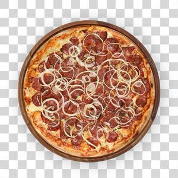

Pizza Pepperoni

Homemade Pepperoni Pizza
Quick, Easy and Delicious-Homemade pizza crust and tomato sauce has never
been easier-and this recipe for pepperoni pizza produces a delicious
classic!
Ingredients
- ½ (12 ounce) can CONTADINA® Tomato Paste
- 1 teaspoon dried oregano, crushed
- 1 teaspoon dried basil, crushed
- ½ teaspoon garlic powder
- ½ teaspoon onion powder
- ½ teaspoon sugar
- ½ teaspoon salt
Steps in a row
- For sauce: Combine all sauce ingredients with 1/2 cup water in a medium bowl; set aside for flavors to develop while making crust. Freeze remaining paste.
- For crusts: Combine 2 cups of flour with the dry yeast, sugar and salt. Add the water and oil and mix until well blended (about 1 minute).
- Knead for about 4 minutes, on a floured surface, until dough is smooth and elastic.
- Divide dough in half. Pat each half (with floured hands) into a 12-inch greased pizza pan OR roll dough to fit pans.
Return top
Return main page